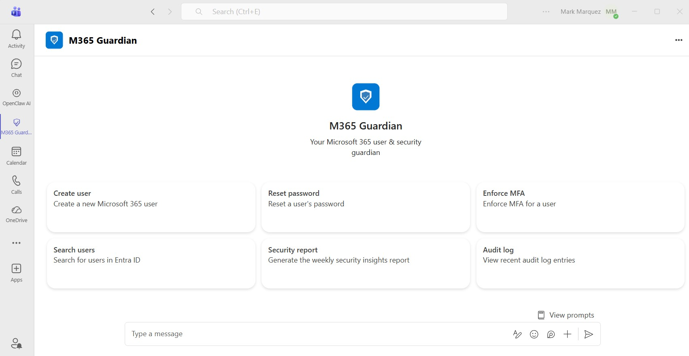
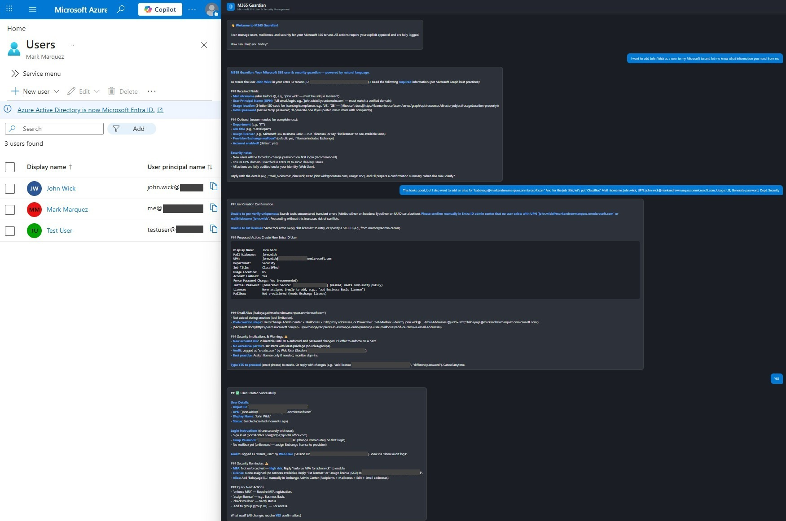
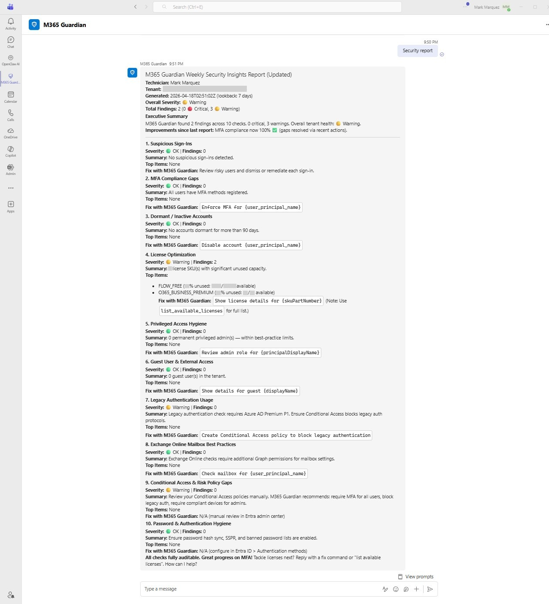
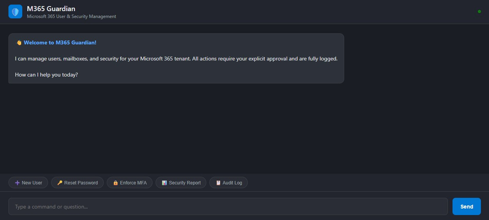

Building M365 Guardian: An LLM-Powered Microsoft 365 Administration Chatbot

Building M365 Guardian: An LLM-Powered Microsoft 365 Administration Chatbot
Running Microsoft 365 administration through the Entra ID portal or PowerShell works, but it’s slow, error-prone, and requires specialized knowledge that not every IT technician has. I wanted a solution where a technician could type “Create a new user named Sarah Chen in Engineering with a Business Basic license” and have it just work—with full audit logging, mandatory confirmation before any changes, and automated weekly security reports delivered to Teams and email. This project documents how I built and deployed M365 Guardian, an LLM-powered chatbot that manages Entra ID users and Exchange Online mailboxes through natural language.
The Challenge: Simplifying M365 Administration for SMB IT Teams
Small and mid-sized businesses rarely have dedicated Microsoft 365 administrators. The technicians managing user accounts, password resets, MFA enforcement, and license assignments are often the same people handling helpdesk tickets, network issues, and everything else. They need to switch between the Entra ID portal, Exchange admin center, and PowerShell—each with its own interface, terminology, and quirks.
The goal was to build a single conversational interface that handles all common M365 user management tasks while enforcing security best practices automatically. Every write action requires explicit human confirmation. Every action is logged for compliance. And a weekly security report runs all 10 checks without anyone having to remember to do it.
Architecture Overview
Microsoft Teams / Web Chat
↓
Bot Framework / REST API
↓
LLM Orchestration (LiteLLM)
Tool Calling + Structured Output
↓
Tool Executor
Routes tool calls → Graph API
Audit logging on every operation
↓
Microsoft Graph API
Entra ID · Exchange Online · Identity ProtectionThe LLM layer is provider-agnostic through LiteLLM—the deployment uses xAI’s Grok, but swapping to Anthropic Claude, OpenAI, or Azure OpenAI requires only changing two environment variables with no code changes.
Technology Stack
- Backend: Python 3.11 on Azure App Service (Linux, B1 tier)
- LLM Orchestration: LiteLLM with xAI Grok (grok-4-1-fast-reasoning)
- Microsoft Graph SDK: msgraph-sdk for Entra ID and Exchange Online operations
- Bot Framework: botbuilder-core for Microsoft Teams integration
- Web Framework: aiohttp for the async REST API and web chat
- Audit Storage: Azure Cosmos DB (session history and action audit logs)
- Scheduled Reports: Azure Functions timer trigger (weekly Monday 8 AM UTC)
- Authentication: Entra ID app registration with least-privilege Graph API permissions (SingleTenant)
- Security: IP-restricted App Service with Azure Bot Service tag allowlist
Tool Inventory: 18 Functions
M365 Guardian exposes 18 tools to the LLM through function calling. Each tool maps to one or more Microsoft Graph API operations, and every call is logged to Cosmos DB with the requesting technician’s identity.
Read operations include searching users, getting detailed user profiles (with MFA status, sign-in activity, group memberships), listing available licenses, checking mailbox provisioning status, querying audit logs, and generating the weekly security report.
Write operations—all requiring explicit “Type YES to proceed” confirmation—include creating users, updating properties, deleting accounts, resetting passwords, enforcing MFA, assigning and removing licenses, managing group memberships, managing shared mailboxes and distribution groups, bulk operations on up to 50 users, and sending reports to Teams channels or email.
The Confirmation Flow: Security by Design
The core safety mechanism is the mandatory confirmation loop. When a technician requests any write action, the bot presents a structured summary showing exactly what will change, lists security implications, and asks for explicit “YES” confirmation before executing. This is enforced at the LLM system prompt level and at the tool executor level—write tools are classified in a WRITE_TOOLS set and treated differently from read operations.
┌─────────────────────────────────────────┐
│ M365 GUARDIAN — ACTION SUMMARY │
├─────────────────────────────────────────┤
│ Action: Create new user + mailbox │
│ Target: sarah.chen@contoso.com │
│ Changes: │
│ • Display name: Sarah Chen │
│ • Department: Engineering │
│ • License: Microsoft 365 Business │
│ • Temporary password: ******** │
│ • Force password change: Yes │
│ Warnings: │
│ • Mailbox may take 15 min to │
│ provision after license assignment │
│ Audit ID: a1b2c3d4-e5f6-7890-... │
└─────────────────────────────────────────┘
⚠️ Type YES to proceed, or anything else to cancel.
Weekly Security Insights Report: 10 Automated Checks
The report service runs 10 security and best-practice checks against the tenant, each with configurable severity thresholds:
- Suspicious Sign-Ins — queries Identity Protection for risky sign-in events (requires Azure AD P2)
- MFA Compliance Gaps — identifies users without any registered MFA method
- Dormant/Inactive Accounts — finds accounts with no sign-in for 90+ days
- License Optimization — flags SKUs with significant unused capacity
- Privileged Access Hygiene — counts permanent Global Admin and privileged role holders
- Guest User & External Access — reviews guest accounts for stale or unnecessary access
- Legacy Authentication Usage — checks for sign-ins using legacy protocols
- Exchange Online Best Practices — reviews auto-forwarding rules, excessive delegations, storage quotas
- Conditional Access & Risk Policy Gaps — identifies missing or disabled policies
- Password & Authentication Hygiene — checks SSPR status, banned password lists, weak methods
Each check returns a severity (Critical, Warning, or OK), a finding count, the top 5 affected items, and a “Fix with M365 Guardian” action link that opens the chatbot with a pre-filled remediation command. The report is delivered as an Adaptive Card in Teams and an HTML email.

Azure Deployment
The entire infrastructure runs in a single Azure resource group with the following resources:
- App Service (B1 Linux) — hosts the bot endpoint and web chat on Python 3.11
- App Service Plan — shared between the web app and Function App
- Cosmos DB — two containers:
sessionsfor conversation state,audit_logsfor action history (1-year TTL) - Azure Bot Service — SingleTenant registration bridging Teams to the App Service
- Azure Function App — timer trigger for the weekly report (Monday 8 AM UTC CRON)
- Storage Account — required by the Function App runtime
The App Service uses Azure platform-level access restrictions, allowing only specific IPs and the Azure Bot Service tag, with all other traffic denied. The web chat interface requires Entra ID sign-in, while the bot endpoint is secured by Bot Framework SDK token validation. Environment variables store all secrets (client secrets, API keys, Cosmos keys)—nothing is hardcoded in the codebase.
Web Chat Interface
The standalone web chat provides the same capabilities as the Teams bot, accessible at the App Service URL. It features a dark-themed interface with quick-action buttons for common tasks (New User, Reset Password, Enforce MFA, Security Report, Audit Log), message streaming with typing indicators, and session persistence across page refreshes.

Teams Integration
M365 Guardian is packaged as a custom Teams app with a manifest, bot registration, and icon set. Technicians can chat with the bot directly in Teams personal chat, using the same natural language they’d use in the web interface. The bot supports command suggestions and the welcome message guides new users through available capabilities.
LLM Provider Flexibility
| Provider | LLM_PROVIDER | Required Env Var |
|---|---|---|
| xAI / Grok (current) | xai | XAI_API_KEY |
| Anthropic Claude | anthropic | ANTHROPIC_API_KEY |
| Azure OpenAI | azure_openai | AZURE_OPENAI_API_KEY |
| OpenAI | openai | OPENAI_API_KEY |
No code changes, no redeployment of the application—just update the environment variables and restart the App Service. This was validated by switching between providers during development.
Results
- User creation with mailbox provisioning — natural language to Graph API in under 5 seconds, including license assignment and MFA enforcement
- Password resets with proactive security warnings — the bot detects missing MFA and recommends enforcement before the technician asks
- Full audit trail — every tool call logged to Cosmos DB with technician identity, tool arguments (passwords redacted), result summary, and timestamp
- Weekly security report — all 10 checks running against the live tenant, generating actionable findings with severity ratings
- Dual interface — identical functionality through both the web chat and Teams bot
The confirmation-before-execution pattern successfully prevents accidental writes during use—with every destructive action required explicit approval.
Source Code
The complete codebase is available on GitHub: github.com/marky224/m365-guardian
Conclusion
M365 Guardian proves that an LLM-powered administration tool can be both powerful and safe. The combination of natural language understanding, mandatory confirmation gates, and full audit logging creates a system that’s faster than the admin portal, more accessible than PowerShell, and more auditable than either. For MSP technicians managing multiple Microsoft 365 tenants, a tool like this transforms repetitive admin tasks into simple conversations—while ensuring no action is taken without explicit human approval.
The application establishes the foundation for Phase 2 features: SharePoint and OneDrive management, Conditional Access policy creation, RAG-powered documentation lookup, and multi-tenant support for MSP environments.